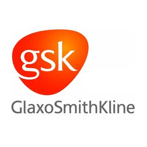
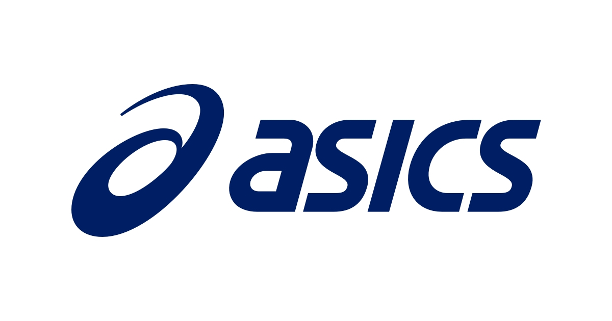
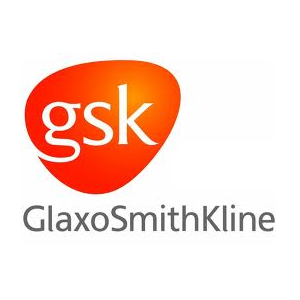
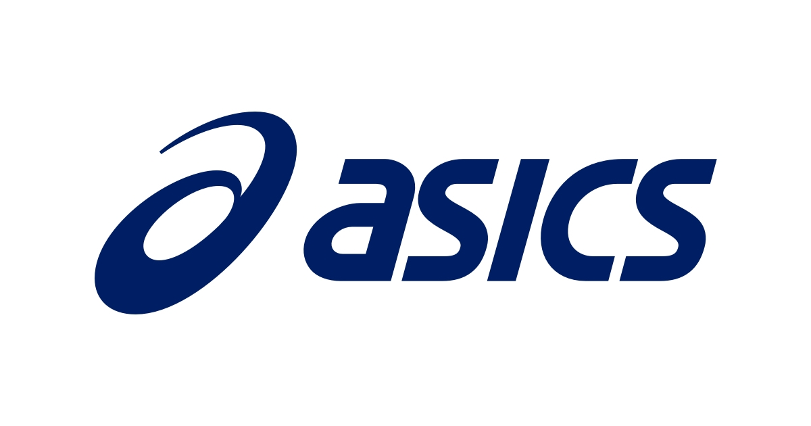
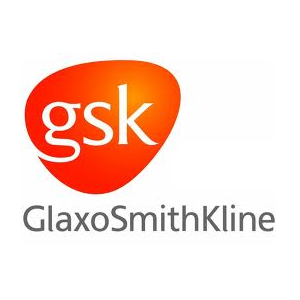
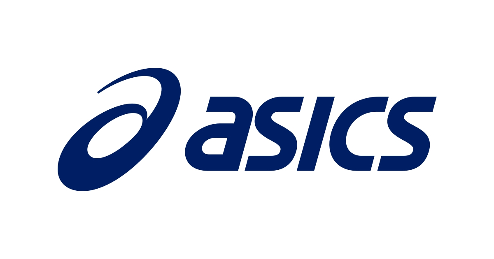

TAAG stands for Technology and Activation Group. As it states, our team's mission is everything related to the technological development and activation processes of digital advertising for our international well-known clients. Our main task is to traffic advertising campaigns for our clients using web-based adservers which are DCM (Google Campaign Manager) and Sizmek MDX.
The trafficking process can be shortly described as the creation of digital advertising placements (space where ads are displayed on a web page) and assigning creatives to them, to finalize by generating the tag codes (snippets of html5 codes) implemented on publishers' web pages to display the ads whenever the page is loaded. We also generate tracking tags which serve to record the number of impressions and clicks for a certain ad. One of our most important tasks is also to implement third-party tracking tags and conversions pixels (also called vendor pixels) on advertisers' web pages to record page visits, sales conversions, lead generation and several other user actions. These two main tasks come with several other sub-tasks such as advertisers web pages technical testing, troubleshooting any wrong-served ads within campaigns, troubleshooting pixels implementations...etc.
Our clients are well-known international ones ranging between automobiles, food, clothing and several other verticals. The following clients are the ones handled by our team:

